Improving the intranet
@ Canada's National Ballet School
Performing arts education · UX research consultant · 2025
As part of the University of Toronto’s master’s capstone, my team served as UI/UX consultants for Canada’s National Ballet School. The client sought help making its intranet more engaging and easier to use for its diverse staff community.
- Approach
- User interview, expert review, secondary research.
- Outcome
- Our research identified usability and visual issues, as well as gaps in engagement and collaboration. The client gained a clearer understanding of staff pain points and which recommendations to prioritize based on severity.
- My role
- I worked as a UX research consultant as part of the capstone team.
Content is optimized for desktop viewing.
Background
Following the development of an in-depth communication strategy, the client felt its intranet — a private network used to share internal information — was underserving its communication objectives. The client sought to transform it into a digital space that felt easy to use, engaging, and welcoming to staff, while reflecting the school’s brand.
Research questions
Addressed through primary research:
- What are staff’s intranet pain points and unmet needs?
- What are the usability issues of the current intranet, and how might we improve them?
- How do the communication needs and habits of desk-oriented and non-desk-oriented staff differ, and how does that affect their intranet usage?
Addressed through secondary research:
- How does the current intranet compare to best practices?
- What common intranet pain points exist, and how do they align with those experienced by staff?

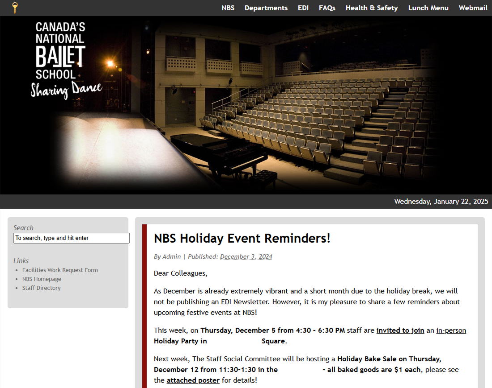

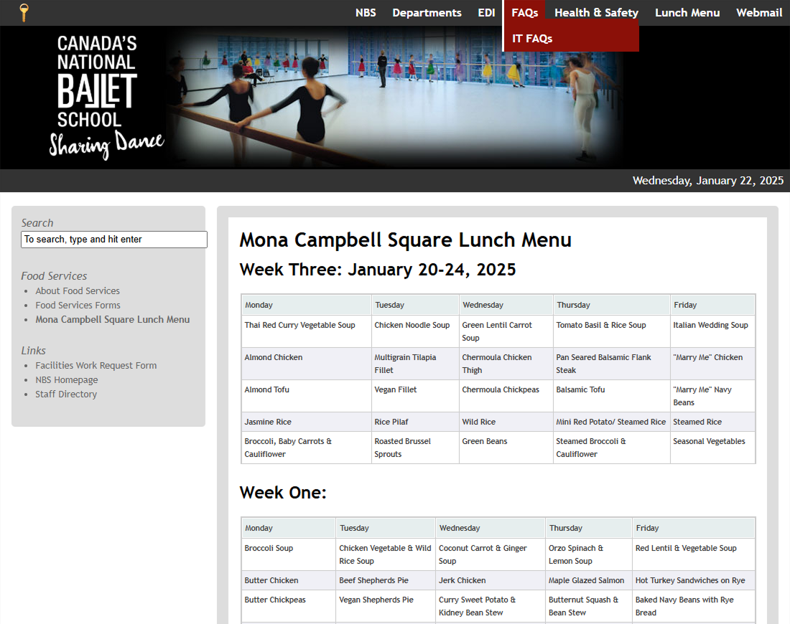
Methods
We conducted 30-minute interviews with 9 internal staff members.
Given the small number of interview participants and a strict project timeline that made further recruitment impractical, we used additional methods to strengthen our findings. A team member performed an expert review focused on prominent usability issues, and we conducted secondary research using peer-reviewed and trusted sources.
Our participant criteria included staff with different:
- Workflows: desk-oriented or non-desk-oriented
- Intranet usage: users and non-users
Because the target participants were internal staff, the client administered recruitment.
Results and Recommendations
Interviews, expert review, and industry best practices revealed four key themes: homepage readability, navigation and search, engagement opportunities, and collaboration gaps.
1. Poor content readability on the homepage
We identified four visual issues that affected readability. For example, all intranet posts appeared on the homepage without truncation, introducing visual clutter and cognitive fatigue.

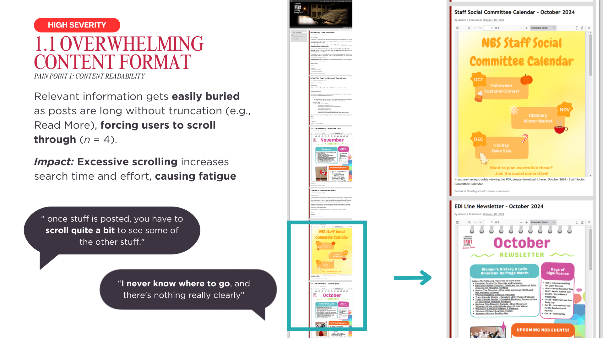
To address the four issues, we shared intranet homepage best practices alongside a visual example.

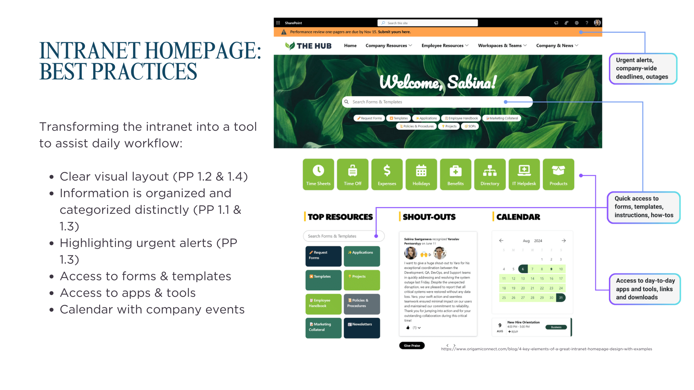
Impact: The client received concrete visual recommendations to improve clarity and readability.
2. Poor navigation and search experience
We identified three navigation concerns, the most critical being the unintuitive navigation menu. Five of the nine participants reported difficulty finding information. Secondary research also supported the connection between frustrating navigation and reduced exploration.

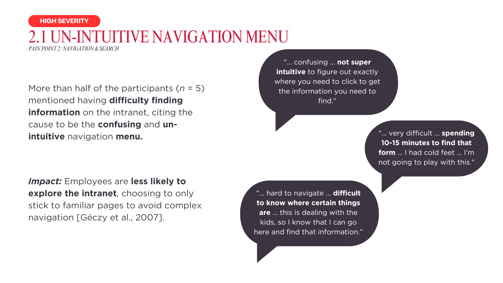
We recommended follow-up research to improve the intranet’s information architecture. For the other navigation and search concerns, we provided design recommendations based on best practices, with visual examples.

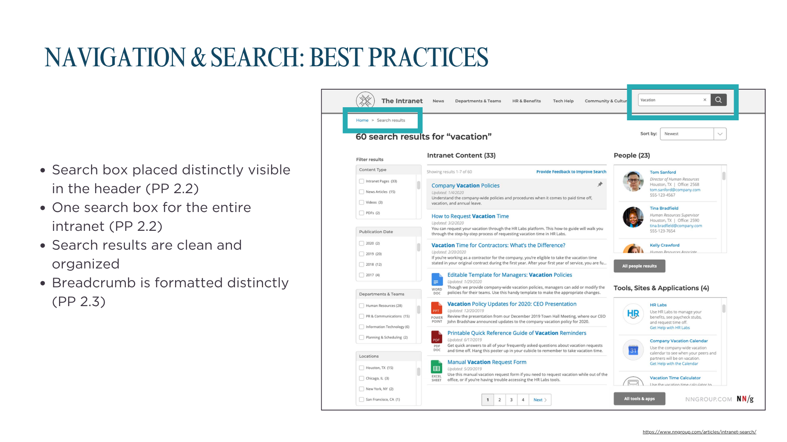
Impact: The client gained a clearer understanding of search and navigation design principles to inform improvements.
3. Lack of engagement opportunities
Four participants highlighted the lack of interactive or engaging features. Secondary research suggested that this gap could contribute to low repeat usage and participation.

Existing engagement features were also not visually prominent, leaving some users unaware of them.

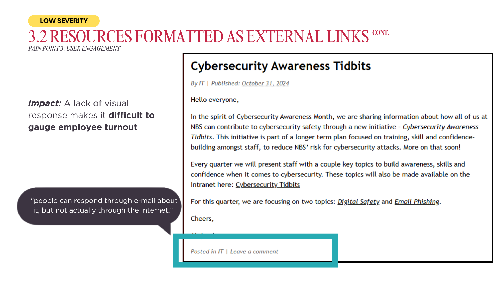
To support ideation, we provided examples from other intranets, including employee highlights.

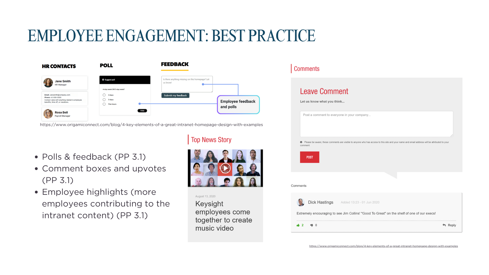
Impact: The examples gave the client inspiration for features that could encourage participation and community-building.
4. Gaps in information affecting collaboration
Content quality and variety fell short of user needs, including outdated information and limited contributions from different departments. Secondary research pointed to unclear content management governance as a potential root cause.

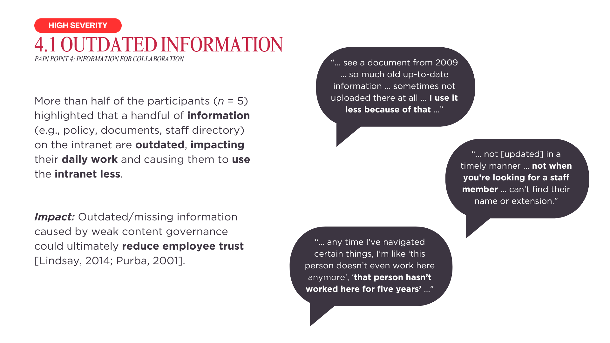
We presented content management structures and their respective pros and cons as reference material if the client chose to restructure its content creation workflow.

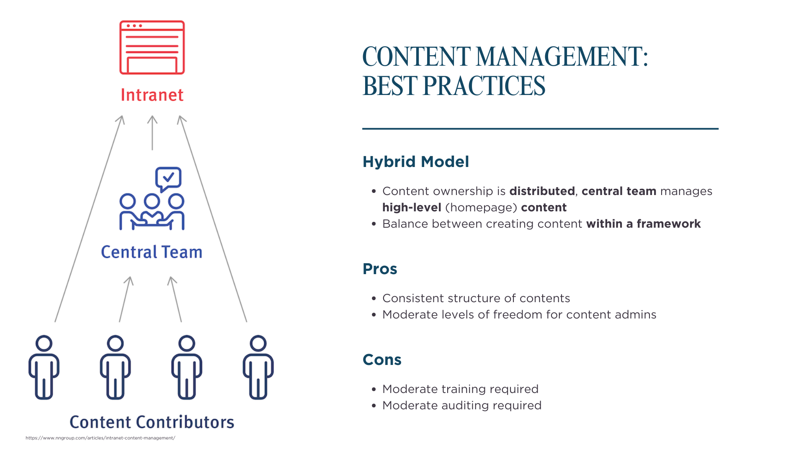
Impact: The client received information to help consider a more effective content management strategy.
5. Communication needs of desk and non-desk staff
We found minimal differences in intranet sentiment and usage between desk and non-desk staff. However, desk staff used the intranet to access non-desk staff schedules when coordinating collaboration.
This insight was not included in the final results slide deck due to time constraints, but it was considered during the intranet redesign process.
6. Next steps
Building on the recommendations, our team developed intranet design concepts addressing the key issues uncovered through the research.
Reflections
- Allow more time for internal recruitment. When working as an external contributor on a product used by internal users, budget for a longer timeline to accommodate internal recruitment processes.
- Structure research results thoughtfully. Insights are easier to digest when grouped by common themes, such as navigation or visual clutter, rather than only by research method.
Appendix
Diagrams and artifacts

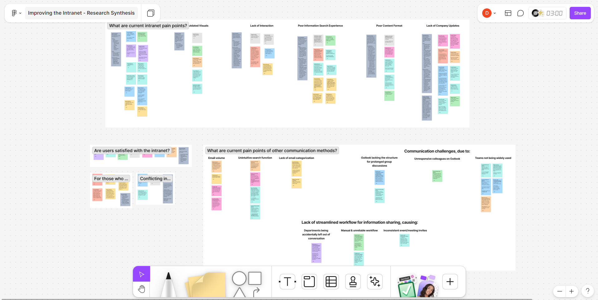